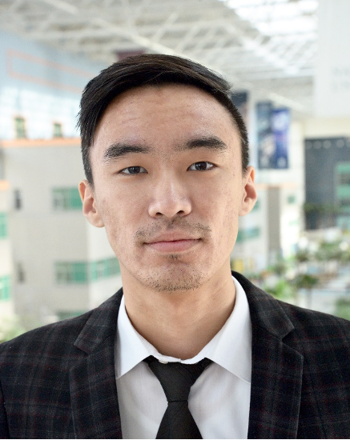
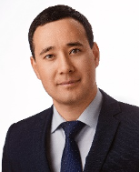

Zhakiev Nurkhat
Principal investigator. He is involved in computer modeling of energy systems, forecasting industrial greenhouse gas emissions, and climate change mitigation analytics. The main topic of his research is mathematical and computer modeling of physical processes, methods of optimization and matrix algebra, modeling in the GAMS environment. h-index=4, https://www.scopus.com/authid/detail.uri?authorId=56043145000 https://www.scopus.com/authid/detail.uri?authorId=56043145000

Bayandy Sarsembayev
Received the specialist qualification in Railway Automation and Control following with Candidate (PhD) Degree in Technical Sciences in Transport Operation from the Kazakh Academy of Transport and Communications, Almaty, Kazakhstan, in 2000 and 2005 respectively. He gained the M.Sc. degree in Systems and Control Engineering from City University of London, London, U.K., in 2015. He earned Ph.D. degree in Electrical Engineering and Electronics Research, Brunel University London, U.K. in February, 2023.

Alexandr Ten
Alexandr Ten gained Master of Engineering degree in Electrical and Computer Engineering from the University of British Columbia, Vancouver, Canada in 2021 under the “Bolashak” program. He earned Bachelor degree in Automation and Control, Karaganda State Technical University, Karagandy, Kazakhstan in 2008.

Received the B.Sc. and M.Sc. degree in electrical and electronic engineering at Nazarbayev University, Astana, Kazakhstan, in 2017 and 2019, respectively. He is currently pursuing research as a researcher in Department of Science and Innovation at Astana IT University (Astana, Kazakhstan) and in Electrical and Computer Engineering Department at Nazarbayev University (Astana, Kazakhstan). His research interests are frequency response analysis of transformers, transformer modeling, insulator diagnosis using computer vision and machine learning, analog circuit design, power transmission and energy modeling.
Akhmetov Yerbol
Received the B.Sc. and M.Sc. degree in electrical and electronic engineering at Nazarbayev University, Astana, Kazakhstan, in 2017 and 2019, respectively. He is currently pursuing research as a researcher in Department of Science and Innovation at Astana IT University (Astana, Kazakhstan) and in Electrical and Computer Engineering Department at Nazarbayev University (Astana, Kazakhstan). His research interests are frequency response analysis of transformers, transformer modeling, insulator diagnosis using computer vision and machine learning, analog circuit design, power transmission and energy modeling.

Mr. Bekzhan Mukatov has 14 years of experience in managing of power systems, improving, and creating new automated control systems for Kazakhstan power system. Mr. Mukatov was Managing Director for National Electric Grid Development and System Services at KEGOC JSC focusing on planning the development of the national electrical grid and the energy system of Kazakhstan as a whole. Interacted with the Central Asia and Russian power systems on export-import of electricity issues, provision of system services, and transit of electricity. Participated in the development of long-term forecast balances of electricity and capacity, in the formation and launch of the capacity market, on relations with Central Asian and Russia power systems, improvement and development of legislation on renewable energy sources.
Bekzhan Mukatov
Mr. Bekzhan Mukatov has 14 years of experience in managing of power systems, improving, and creating new automated control systems for Kazakhstan power system. Mr. Mukatov was Managing Director for National Electric Grid Development and System Services at KEGOC JSC focusing on planning the development of the national electrical grid and the energy system of Kazakhstan as a whole. Interacted with the Central Asia and Russian power systems on export-import of electricity issues, provision of system services, and transit of electricity. Participated in the development of long-term forecast balances of electricity and capacity, in the formation and launch of the capacity market, on relations with Central Asian and Russia power systems, improvement and development of legislation on renewable energy sources.

Aidyn Bakdolotov
Aidyn Bakdolotov is a MSc in Nuclear Engineering (Purdue University, USA, 2013). He is an experienced energy sector modelling expert with research interests in energy policy, climate change and economic development of Kazakhstan and the Central Asian region. During his professional career, he worked in many different areas such as power industry (combined power plant at Almaty CHP-2), academia (Nazarbayev University), think tanks such as Economic Research Institute and Zhasyl Damu. He participated in many projects related to mitigation issues of the region, including preparation of nationally determined contributions (NDC), National communications, Biennial reports, Low carbon decarbonization strategy and pathways and many others. In these projects, he mainly took part in analysis, modelling and preparation of the scenarios of energy, climate policies with focus on GHG emissions, energy intensity of GDP, energy efficiency improvements and many others issues. In economic modelling he participated in research related to income, taxes, budget and many other macroeconomic parameters. Currently, he works as the Director of Climate change Center at the Economic research institute. He took direct part in the development of the Strategy of achievement of carbon neutrality of Kazakhstan till 2060 year. He has publications in national and international journals.